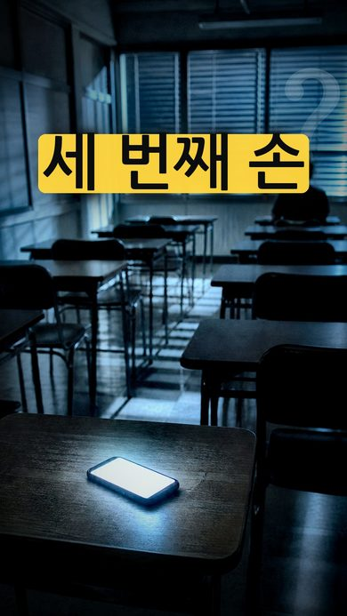

둘 다 서류는 다 만들어 뒀고, 사이트에 내는 일만 남았습니다. 아래만 보시고 정해 주세요.
| ① 세 번째 손 | ② 끊기지 않는 약 | |
|---|---|---|
| 모집 | 2026 건전한 사이버 세상 만들기 ‘디지털 공감’ 숏폼 공모전 · 일반부 | 사랑의열매 배분사업 아이디어 공모전 · 건강·돌봄 |
| 여는 곳 | (사)한국인터넷기업협회 | 사회복지공동모금회 |
| 마감 | 12월 5일(토) | 2027년 1월 15일(금) |
| 상금 | 일반부 1등 200만 원 | 대상 200만 원 총 600만 원 · 7명 |
| AI 활용 | 허용 접수 폼에 활용 여부 체크 | 제한 조항 0건 요강 전체에 AI 언급 없음 |
| 내는 법 | 유튜브 [미공개] 업로드 + 구글폼 | 홈페이지 온라인 접수 |
| 발표·방문 | 없음 12.22 행사 참석 필수인지는 공고에 없음 | 없음 심사는 서면 100% |
| 준비물 | 47초 영상 완성 ✓ | A4 2쪽 제안서 완성 ✓ |
| 남은 일 | 영상 올리고 폼 제출 | 사연 한 문장만 확인 |

| 1 | 새벽 두 시 — 영상 하나가 올라옵니다 |
|---|---|
| 2 | 몰래 찍는 손이 등 뒤에서 올라갑니다 |
| 3 | 찍은 사람은 장난이었다고 말합니다 |
| 4 | 다음 날, 영상은 반 전체로 번집니다 |
| 5 | 웃음은 짧고, 저장은 오래 남습니다 |
| 6 | 지워 달라고 해도 저장된 파일은 남습니다 |
| 7 | 그 주, 그 학생의 자리가 비었습니다 |
| 8 | 영상은 손을 건너 점점 커집니다 |
| 9 | 찍는 손, 올리는 손, 그리고 넘기는 손 |
| 10 | 우리가 멈출 수 있는 건, 세 번째 손입니다 |
| 11 | 넘기지 않고, 캡처해 두고, 117에 알립니다 |
| 12 | 끝 화면 — 117 · 1377 · 1388 안내 |
제목
설명란
폼에 넣는 작품 설명
일을 시작한 사람에게 딱 6개월 병원비·약값을 잇는 사업입니다.
1. 「세 번째 손」은 어디에 올릴까요?
2. 폼의 ‘AI 활용 여부’는 어떻게 표시할까요?
3. 「끊기지 않는 약」 사연 문장은?